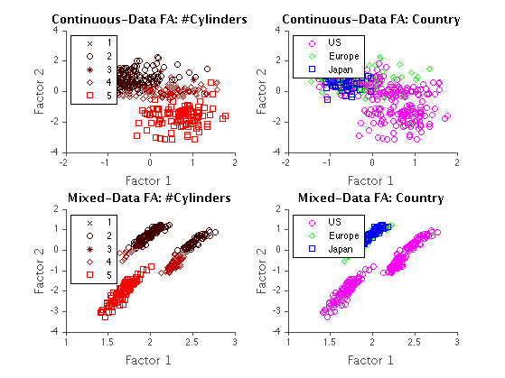

load autoData;
setSeed(3);
Dz = 2;
fprintf('\n\n*****demoFAemt cts\n\n')
opt=struct('Dz', Dz);
[params0, data] = initFA(data, [], opt);
dataC = data; dataC.discrete = [];
params0.a = 1;
params0.b = 1;
options = struct('maxNumOfItersLearn', 3,...
'lowerBoundTol', 1e-6,...
'estimateBeta',1,...
'estimateMean', 1,...
'estimateCovMat',0);
funcName = struct('inferFunc', @inferFA, 'maxParamsFunc', @maxParamsFA);
[params, logLik] = learnEm(dataC, funcName, params0, options);
[ss, logLik, postDist] = inferFA(data, params, []);
factorsC = postDist.mean;
figure(2);clf
[D,N] = size(data.continuous);
nr = 2; nc =2;
count = 1;
for i = [1 3]
if i == 1
colors = [0 0 0; 1/4 0 0; 2/4 0 0; 3/4 0 0; 1 0 0];
markers = {'x','o','*','d','s'};
elseif i == 3
colors = [1 0 1; 0 1 0; 0 0 1];
markers = {'o','d','s'};
end
subplot(nr,nc,count)
hold on
for j = 1:nClass(i)
idx = find(data.discrete(i,:) == j);
h(j) = plot(factorsC(1,idx), factorsC(2,idx),'o','color', colors(j,:),'marker',markers{j});
end
if i == 1
legend('1','2','3','4','5','location','northwest');
ht = title('Continuous-Data FA: #Cylinders');
elseif i == 3
legend('US','Europe','Japan','location','northwest');
ht = title('Continuous-Data FA: Country');
end
hx = xlabel('Factor 1');
hy = ylabel('Factor 2');
set(gca,'fontname','Helvetica');
set([hx,hy],'fontname','avantgarde','fontsize',13,'color',[.3 .3 .3]);
set(ht,'fontname','avantgarde','fontsize',13,'fontweight','bold');
set(gca,'box','off','tickdir','out', 'ticklength',[.02 .02],'xcolor',[.3 .3 .3],'ycolor',[.3 .3 .3],'linewidth',1);
clear h;
count = count + 1;
end
fprintf('\n\n*****demoFAemt mixed\n\n')
setSeed(3);
data.categorical = encodeDataOneOfM(data.discrete, nClass);
opt=struct('Dz', Dz, 'nClass', nClass);
[params0, data] = initMixedDataFA(data, [], opt);
params0.a = 1;
params0.b = 1;
options = struct('maxNumOfItersLearn', 10,...
'lowerBoundTol', 1e-6,...
'estimateBeta',1,...
'estimateMean', 1,...
'estimateCovMat',0);
funcName = struct('inferFunc', @inferMixedDataFA, 'maxParamsFunc', @maxParamsMixedDataFA);
[params, logLik] = learnEm(data, funcName, params0, options);
params.psi = randn(size(data.categorical));
[ss, logLik, postDist] = inferMixedDataFA(data, params, []);
factorsD = postDist.mean;
figure(2);
nr = 2; nc =2; count = 3;
for i = [1 3]
if i == 1
colors = [0 0 0; 1/4 0 0; 2/4 0 0; 3/4 0 0; 1 0 0];
markers = {'x','o','*','d','s'};
elseif i == 3
colors = [1 0 1; 0 1 0; 0 0 1];
markers = {'o','d','s'};
end
subplot(nr,nc,count)
hold on
for j = 1:nClass(i)
idx = find(data.discrete(i,:) == j);
h(j) = plot(factorsD(1,idx), factorsD(2,idx),'o','color',colors(j,:),'marker',markers{j});
end
if i == 1
legend('1','2','3','4','5','location','northwest');
ht = title('Mixed-Data FA: #Cylinders');
elseif i == 3
legend('US','Europe','Japan','location','northwest');
ht = title('Mixed-Data FA: Country');
end
hx = xlabel('Factor 1');
hy = ylabel('Factor 2');
set(gca,'fontname','Helvetica');
set([hx,hy],'fontname','avantgarde','fontsize',13,'color',[.3 .3 .3]);
set(ht,'fontname','avantgarde','fontsize',13,'fontweight','bold');
set(gca,'box','off','tickdir','out', 'ticklength',[.02 .02],'xcolor',[.3 .3 .3],'ycolor',[.3 .3 .3],'linewidth',1);
clear h;
count = count + 1;
end
*****demoFAemt cts
Iter 1 Lower bound -8.509632, increase by NaN
Iter 2 Lower bound -7.119670, increase by 1.389962
Iter 3 Lower bound -6.112891, increase by 1.006779
*****demoFAemt mixed
Dm =
18
Nm =
392
Iter 1 Lower bound -16.557657, increase by NaN
Iter 2 Lower bound -11.412171, increase by 5.145487
Iter 3 Lower bound -10.092401, increase by 1.319769
Iter 4 Lower bound -9.713573, increase by 0.378828
Iter 5 Lower bound -9.580678, increase by 0.132895
Iter 6 Lower bound -9.509354, increase by 0.071324
Iter 7 Lower bound -9.462040, increase by 0.047313
Iter 8 Lower bound -9.427408, increase by 0.034633
Iter 9 Lower bound -9.400459, increase by 0.026949
Iter 10 Lower bound -9.378611, increase by 0.021848
